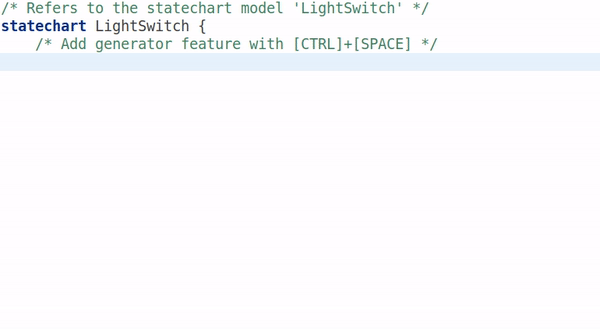
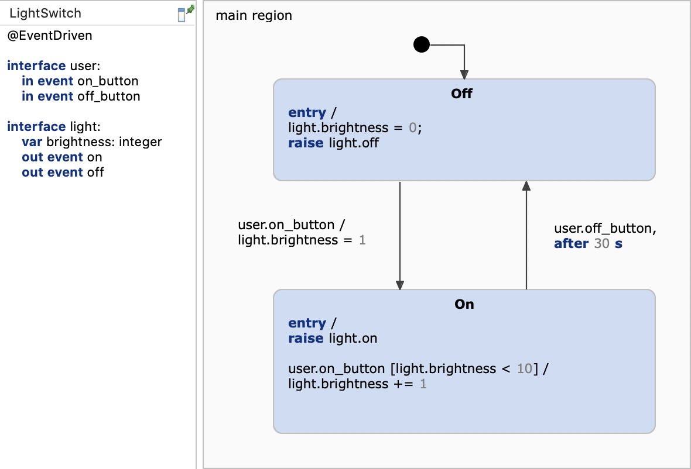
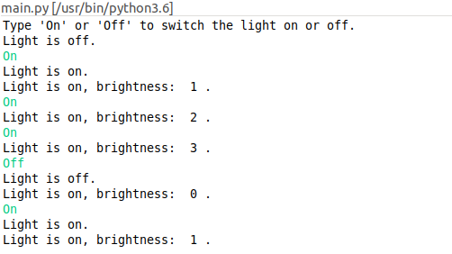

This example demonstrates how to generate Python code from a statechart. We will use a simple light switch example and focus on the generator model.
This example project requires the PyDev plugin. PyDev is a fully featured Python IDE for Eclipse that provides syntax highlighting, code completion, and the ability to run and debug Python scripts directly within your workspace.
If you import this project without PyDev installed, your IDE will raise an Unknown referenced nature: org.python.pydev.pythonNature warning. To resolve this and successfully run the example, please install PyDev using one of the following methods:
http://www.pydev.org/updates/. Select the PyDev feature and complete the installation wizard.
Note: After restarting the IDE, you may also need to configure your local Python interpreter by navigating to Window -> Preferences -> PyDev -> Interpreters -> Python Interpreter.
In order to generate code we need to specify which code generator to use and into which folder to generate. For this, we need to create a so-called generator model. To do so,
The new generator model will look similar to this one:
The generator model defines where the code should be generated into, and enables the generation of a default timer service. Besides setting up the target location, the generator model allows you to adjust several aspects of the generated code like naming, license comments or function inlining. Press [CTRL]+[SPACE] to get a list of available features. For more information, please refer to our documentation.

Code generation is usually invoked each time the statechart model is saved. This behavior can be disabled by unchecking the option Project -> Build Automatically. You can always manually invoke the code generation with Generate Code Artifacts in the context menu of the generator model.
As an example application we will use the light switch example with brightness adjustment from the Basic Tutorial.

Our application is a simple interactive console with which the user can switch the light on or off. The complete application code is implemented in main.py:
The most important parts are commented in the main.py file. These are the bullet points:
user.on_button and user.off_button
You can run the application with Run As -> Python Run on the main.py file. A console should open and ask you for input like in the screenshot below.
